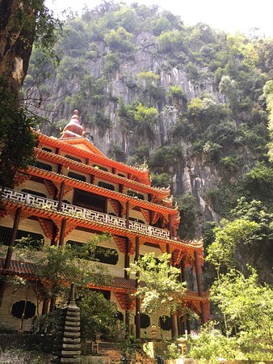

Perak Tong Cave Temple
Tour Detail
Perak Tong Cave Temple,Ipoh,Perak,Malaysia
08：00a.m-05:00p.m
08：00a.m-05:00p.m
Description
The Perak Tong Cave Temple is a renowned Buddhist temple located near Ipoh, the capital city of Perak state in Malaysia. Situated within a limestone cave, this temple is not only a religious site but also a popular tourist attraction known for its stunning natural surroundings and intricate Buddhist artwork.Perak Tong Cave Temple is believed to have been founded in the 1920s by a Chinese monk, who discovered the cave and decided to establish a place of worship there. Since then, the temple has undergone several renovations and expansions, resulting in the impressive complex that exists today.
One of the most striking features of Perak Tong Cave Temple is its towering limestone cave entrance, adorned with traditional Chinese temple architecture. Visitors must climb a flight of steep stairs to reach the cave entrance, where they are greeted by panoramic views of the surrounding landscape.
Inside the cave, visitors will find a series of caverns and chambers adorned with colorful murals, statues of Buddha, and intricate carvings depicting scenes from Buddhist mythology and teachings. The main attraction of the temple is a massive golden statue of Buddha, which is located at the end of a dimly lit passage within the cave.
Apart from the main cave temple, Perak Tong also features several smaller shrines, pavilions, and prayer halls scattered throughout the surrounding grounds. The temple complex is set amidst beautifully landscaped gardens and offers peaceful walking paths for visitors to explore.
One of the highlights of a visit to Perak Tong Cave Temple is the opportunity to climb a series of steep staircases to reach a scenic lookout point situated high above the cave entrance. From here, visitors can enjoy breathtaking views of the surrounding limestone hills and the city of Ipoh in the distance.
Gallery
